![]()
Illustration by Allison Horst

R-Ladies Santa Barbara Meetup
This document is based on teaching material originally developed for the Bren School of Environmental Science & Management’s Master of Environmental Data Science (MEDS) program. Check out Creating your personal website using Quarto, Customizing Quarto websites, and Adding a blog to your existing Quarto website for additional information and examples.
To follow along, you’ll need:
You should already have git on your device, but let’s check for it anyway. Open your IDE and run the following in the Terminal (choose the option for your operating system):
Terminal
which gitTerminal
where gitIf you get something that looks like a file path to git on your computer (e.g. /usr/local/bin/git on a Mac, C:\Program Files\Git\mingw64\bin\git.exe on Windows, though it could differ slightly on your computer), then you have git installed. If you instead get no response at all, you should download & install git here: git-scm.com/downloads
Run the following commands (by pressing enter / return after each line) in your IDE’s Terminal. Be sure to replace the username (keep the quotation marks) with your GitHub username and the email with the email you used for your GitHub account.
Terminal
git config --global user.name "Jane Doe"
git config --global user.email janedoe@example.comThen, in the Terminal run the following, and carefully check that the name and email returned match your GitHub information:
Terminal
git config --list --globalFirst: What even is a personal access token? From GitHub’s documentation:
Personal access tokens (PATs) are an alternative to using passwords for authentication to GitHub when using the GitHub API or the command line.
This means that in order to push your work (files, scripts, etc.) from your laptop (or any other computer) to GitHub, you’ll need to first to generate a PAT. Importantly, you’ll need to generate a PAT for each computer you wish to work from. For example, we will complete the following steps to create a PAT for your personal laptop, but you’ll also need to create a PAT if/when you choose to work on a second computer at home or on a server, etc. Good news is that you can follow these same steps when you’re ready to set up additional PATs on other machines. For now, let’s get a PAT for our personal laptop squared away:
{usethis} package in R by running the following in your Console:Console
install.packages(“usethis”)Console
usethis::create_github_token() 
Add a note in the Note field to describe which machine this PAT is being used for. For example, if you are generating a PAT for your laptop, you might choose to name it, My Personal Laptop.
Next, you’ll see a section called Select scopes with reasonable options already selected for you. You don’t need change anything. Scroll down to the bottom of that page and click the green Generate token button:

Copy the generated PAT to your clipboard
Head back to your IDE and run the following in the Console:
Console
gitcreds::gitcreds_set()This will prompt you to paste the PAT you just copied from GitHub. Press return / enter to run. You should see something like this show up if all is well so far (you’ll have pasted your PAT where the example below says “REDACTED”):

Console
usethis::git_sitrep()Does it return information about your connected GitHub account that looks something like below? Great! You’ve configured git and successfully stored your PAT.

Note: Setting an expiration date on personal access tokens is recommended in order to keep your information secure. GitHub will send you an email when it’s time to regenerate a token that’s about to expire. Follow the email prompts, then use gitcreds::gitcreds_set() to reset your token.
This document reviews three ways to get started with using Quarto to build your website.
The order of operations is slightly different depending on which approach you decide to take, but the concepts remain the same.
 button in the top right corner. Select New Project…
button in the top right corner. Select New Project…
Choose New Directory, then Quarto Website.


And finally, fill out the Directory name: field – this is the name of your R project, and will eventually become your remote (i.e. GitHub) repository name (Important: see note below re: naming!) – and choose where to save your directory to using the Browse button. I also recommend unchecking the Use visual markdown editor box, if selected (this just means you’re project will open with the Source editor, but you’ll still be able to toggle to the Visual editor, if desired). Click Create Project.
yourGitHubUsername.github.io if you plan to deploy using GitHub pages
Because we’ll be using GitHub pages to publish / host our websites, it’s recommended that you name your project yourGitHubUsername.github.io (you’re allowed one user website with the github.io suffix) – for example, the project / GitHub repository, which contains the code for my personal website, is named samanthacsik.github.io. Otherwise, name it something reasonable (this will become the slug for your site if publishing with GitHub pages, so choose carefully). I’m calling my project mysite just for tutorial purposes only – you should definitely give yours a more practical / creative name.

You should now see a folder called mysite (or whatever you named your Quarto project) with a series of files (_quarto.yml, about.qmd, index.qmd, styles.css) that provide the scaffolding for your website in the Files tab (in the bottom right panel in RStudio, if you haven’t altered the pane layout).
When you create a new Quarto website, a handful of files are generated by default:
index.qmd renders your website’s landing page. Whatever you add to this file will be the first content visitors see when they visit your site. Update the content of index.qmd (or any other website page) using markdown and / or HTML (you can mix and match both on the same page), add and execute code chunks and embed outputs, etc. Importantly, do not change the name of index.qmd – this is the default / expected name given to website landing / home pages. If you change the name of this file, you risk breaking your (eventual) deployment.
about.qmd is a regular ’ole website page. You’re able to change both the name of this file (e.g. change about.qmd to my-new-name.qmd) and / or the title of the file by updating its YAML – by default, the YAML only includes a title:
about.qmd
---
title: "About"
---.qmd file and is denoted by a pair of “gates”, ---._quarto.yml is your website configuration file. Any document rendered within your project directory will automatically inherit the metadata defined in this project-level configuration file (though you can control metadata on a page-by-page basis by making edits to an individual page’s YAML, which will override any options specified in _quarto.yml). Importantly, this is where you define your website’s structure (e.g. your navbar, sidebar, footer, etc.). By default, your file should look similar to this:_quarto.yml
project:
type: website
website:
title: "mysite"
navbar:
left:
- href: index.qmd
text: Home
- about.qmd
format:
html:
theme: cosmo
css: styles.css
toc: truestyles.css is a stylesheet, where you can write CSS rules to alter the appearance of your website. We’ll actually create and use a different type of stylesheet (called a “sassy css file”, .scss) in just a little bit.The following will appear after we preview our website and initialize our project as a git repository
The _site/ directory is where all of your rendered HTML (and other important) files live. When you render or preview your site (we’ll do this in the next step!), Quarto takes all of your .qmd files and converts them to .html files, and saves them to this folder (which is important because web browsers don’t know how to read .qmd files, but do know how to read .html files). We’re actually going to change the name of this folder once we configure our website for deployment, but _site is the default name that Quarto uses (we can leave as-is, for now). You don’t want to physically edit or move any files inside this directory (if you want to make a change to your website, update the .qmd or _quarto.yml file, then re-render).
.gitignore is a place where we can specify any files that we don’t want Git to track (i.e. that we want Git to ignore). This is not a “Quarto thing,” but rather a valuable file that lives inside git directories. One common use is to add any large data files that you don’t want to accidentally push to GitHub (GitHub isn’t designed to handle LARGE files).
Terminal
quarto preview
quarto preview makes it easy to quickly view iterative changes
Running quarto preview launches a preview of your website in a browser window. So long as you leave the preview running, it will update each time you make and save changes to website files (which makes iterating on your work really easy!).
{usethis} package, if necessary. At this point you’ve created a directory (folder) with the website scaffolding files, but it’s not yet being tracked by git, nor is it connected to a remote repository on GitHub. We can use the {usethis} package to help us set this up. First, install the {usethis} package (if you don’t already have it). Do so by running the following in your console:Console
install.packages("usethis"){usethis} is an R package that facilitates interactive workflows for project creation and development
We’re using the {usethis} workflow here because it provides a lot of really helpful tooling (learn more in the documentation), including a couple wrapper functions to execute git commands – in other words, we’ll use some familiar-feeling R functions provided by {usethis} to execute some Git commands, rather than running those Git commands in the Terminal.
usethis::use_git(): To create a local git repository, run the following in your Console:Console
usethis::use_git()Choose yes when asked if it’s okay to commit any uncommitted files. If asked to restart R, choose yes. Once complete, you should see the Git tab appear in your top left pane in RStudio.

When we initialize our R project, mysite/ (or yourGitHubUsername.github.io/), as a git repository using git init (or a wrapper function, such as usethis::use_git()), a hidden .git/ folder is created within that project folder. This hidden .git/ folder is the git repository. As you use git commands (or RStudio’s GUI buttons) to capture versions or “snapshots” of your work, those versions (and their associated metadata) get stored within the .git/ folder. This allows you to access and / or recover any previous versions of your work. If you delete .git/, you delete your project’s history. Here is an example website repository, represented visually:

Click on the Git tab in the top right pane of RStudio. Next to the  symbol, you should see a dropdown menu that displays the name of your current branch.
symbol, you should see a dropdown menu that displays the name of your current branch.
Open RStudio’s Terminal window (next to the Console) and run either git branch (this prints all local branches and highlights the one that you’re currently on) or git status (the first printed line should say On branch <branch_name>).
master, update the name to main. (If your branch is named main, you’re good to go! You can skip this step.) To update your default branch name, run the following in your Console:Console
usethis::git_default_branch_rename(from = "master", to = "main")Confirm that your branch name was updated by running git status in your Terminal – the first printed line should now read, On branch main. The above function only updates your default branch name for this respository. You’ll also want to update your git config file so that the default branch name of any future local git repository is automatically named main. To do so, run:
Console
usethis::use_git_config(init.defaultBranch = "main")This includes things like setting your user.name and user.email, which are used to identify the author of commits (recall that we did this when we first configured git as part of the MEDS Installation Guide). It’s also a place for us to permenently set the name of our default branch for all future git repositories. You can view the contents of your entire git config file by running the following command in your Terminal:
Terminal
git config --listThere is a push across platforms and software to update this historical default branch name from master to main. GitHub has already done so – creating a remote repository first results in a default branch named main. Depending on your version of Git and / or your configuration settings, however, you may need to update the name manually when creating a local git repository first (as we’re doing here).
Console
usethis::use_github()
usethis::use_github() your browser window should open up to your new GitHub repository and look similar to the browser above.Git is a version control software designed to manage the versioning and tracking of source code files and project history. It operates locally on your computer, allowing you to create repositories and track changes. It works directly with files on your computer, and is primarily used through a command line interface (e.g. Terminal, Git Bash). Some GUIs (Graphical User Interfaces), like RStudio, provide user-friendly buttons to execute git commands as well.
GitHub is a cloud-based hosting service that allows you to manage Git repositories – as Jenny Bryan describes in her book Happy Git and GitHub for the useR, hosting services like GitHub “provide a home for your Git-based projects on the internet.” GitHub provides us with the tools for storing, managing, and collaborating on git repositories. It also offers additional features on top of Git, like issue tracking, project management tools, code review, pull requests, and more.
The illustration below depicts how we use Git and GitHub together to version control our work locally (e.g. on our computer(s)), and send versions to and receive updates from a remote (i.e. GitHub) repository.

Illustration by Allison Horst
To open the Command Palette, use the keyboard shortcut, Cmd/Ctrl + Shift + P
Cmd/Ctrl + Shift + P, to open the Command Palette, then type Quarto: Create Project. Press Enter/Return to reveal available options.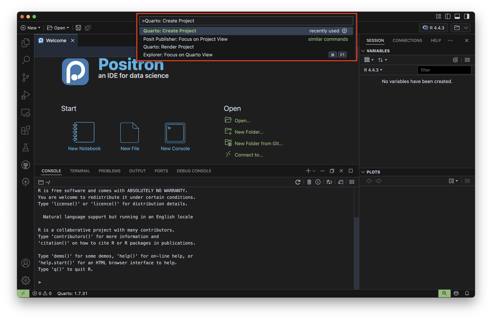
The Command Palette is the place you’ll want to turn to for accessing all the functionality Positron has to offer, from changing your IDE color theme, to accessing version control actions (e.g. git), to searching for and running extensions, and more. Open it using the keyboard shortcut Cmd/Ctrl + Shift + P, then use the fuzzy search to explore all available functionality.
Select Website Project, then choose a directory to save your project to. Click Choose Project Directory to confirm.
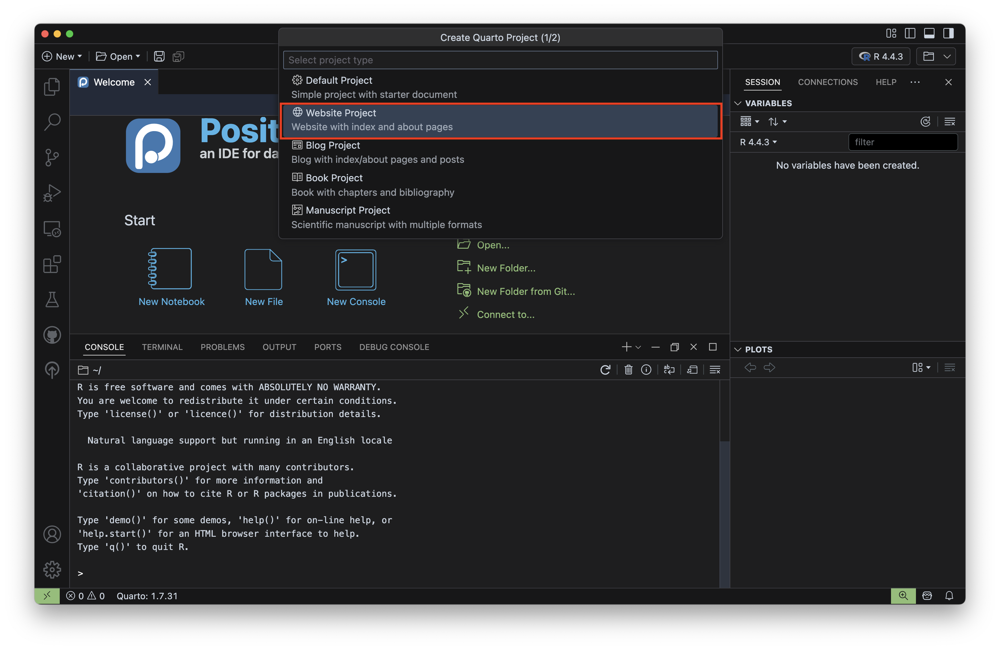
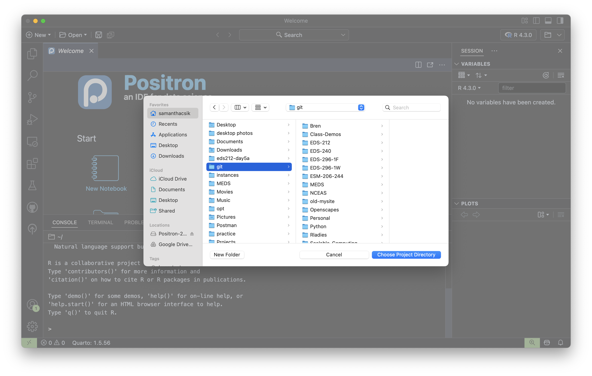
Finally, fill out the Project Directory Name field – this is the name of your Quarto project, and will eventually become your remote (i.e. GitHub) repository name (Important: see note below re: naming!). Press Enter / Return to confirm.
yourGitHubUsername.github.io if you plan to deploy using GitHub pages
Because we’ll be using GitHub pages to publish / host our websites, it’s recommended that you name your project yourGitHubUsername.github.io (you’re allowed one user website with the github.io suffix) – for example, the project / GitHub repository, which contains the code for my personal website, is named samanthacsik.github.io. Otherwise, name it something reasonable (this will become the slug for your site if publishing with GitHub pages, so choose carefully). I’m calling my project mysite just for tutorial purposes only – you should definitely give yours a more practical / creative name.
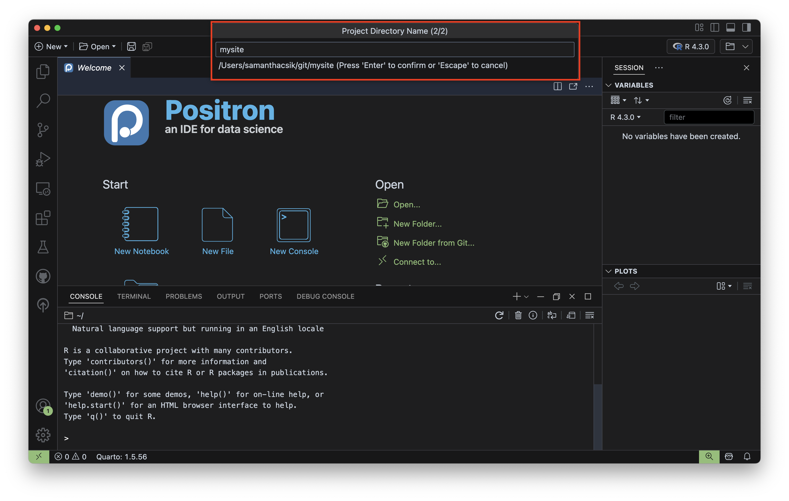
mysite (or whatever you named your Quarto project) in the Explorer menu (left side menu option that looks like two overlapping files) with a series of files (_quarto.yml, about.qmd, index.qmd, styles.css) that provide the scaffolding for your website.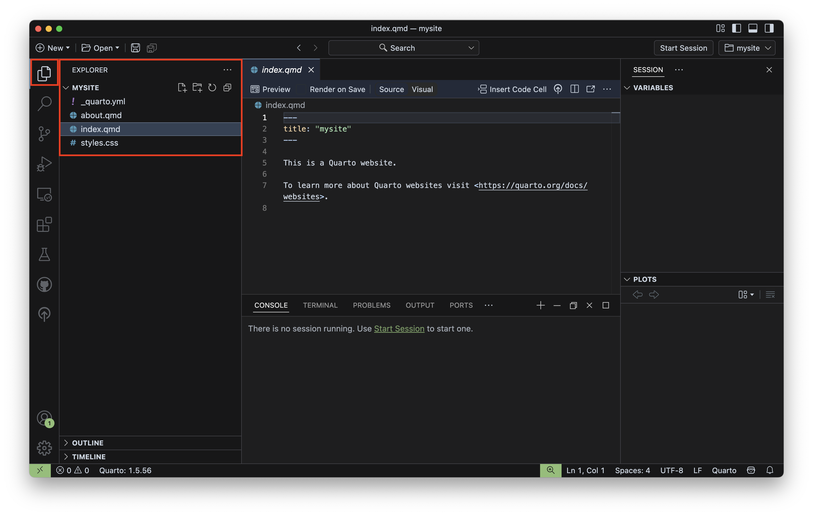
When you create a new Quarto website, a handful of files are generated by default:
index.qmd renders your website’s landing page. Whatever you add to this file will be the first content visitors see when they visit your site. Update the content of index.qmd (or any other website page) using markdown and / or HTML (you can mix and match both on the same page), add and execute code chunks and embed outputs, etc. Importantly, do not change the name of index.qmd – this is the default / expected name given to website landing / home pages. If you change the name of this file, you risk breaking your (eventual) deployment.
about.qmd is a regular ’ole website page. You’re able to change both the name of this file (e.g. change about.qmd to my-new-name.qmd) and / or the title of the file by updating its YAML – by default, the YAML only includes a title:
about.qmd
---
title: "About"
---.qmd file and is denoted by a pair of “gates”, ---._quarto.yml is your website configuration file. Any document rendered within your project directory will automatically inherit the metadata defined in this project-level configuration file (though you can control metadata on a page-by-page basis by making edits to an individual page’s YAML, which will override any options specified in _quarto.yml). Importantly, this is where you define your website’s structure (e.g. your navbar, sidebar, footer, etc.). By default, your file should look similar to this:_quarto.yml
project:
type: website
website:
title: "mysite"
navbar:
left:
- href: index.qmd
text: Home
- about.qmd
format:
html:
theme: cosmo
css: styles.css
toc: truestyles.css is a stylesheet, where you can write CSS rules to alter the appearance of your website. We’ll actually create and use a different type of stylesheet (called a “sassy css file”, .scss) in just a little bit.The following will appear after we preview our website and initialize our project as a git repository
The _site/ directory is where all of your rendered HTML (and other important) files live. When you render or preview your site (we’ll do this in the next step!), Quarto takes all of your .qmd files and converts them to .html files, and saves them to this folder (which is important because web browsers don’t know how to read .qmd files, but do know how to read .html files). We’re actually going to change the name of this folder once we configure our website for deployment, but _site is the default name that Quarto uses (we can leave as-is, for now). You don’t want to physically edit or move any files inside this directory (if you want to make a change to your website, update the .qmd or _quarto.yml file, then re-render).
.gitignore is a place where we can specify any files that we don’t want Git to track (i.e. that we want Git to ignore). This is not a “Quarto thing,” but rather a valuable file that lives inside git directories. One common use is to add any large data files that you don’t want to accidentally push to GitHub (GitHub isn’t designed to handle LARGE files).
Open one of your website files (e.g. index.qmd) and click the Preview button at the top to launch a preview in Positron’s Viewer pane
Optionally, check the box next to Render on Save (which lives next to the Preview button), so that your website preview is refreshed / updated each time to save changes to your files
Quit your preview by pressing Ctrl + C in your Terminal or by clicking the Quarto Preview button (in your Terminal), then Kill Terminal:
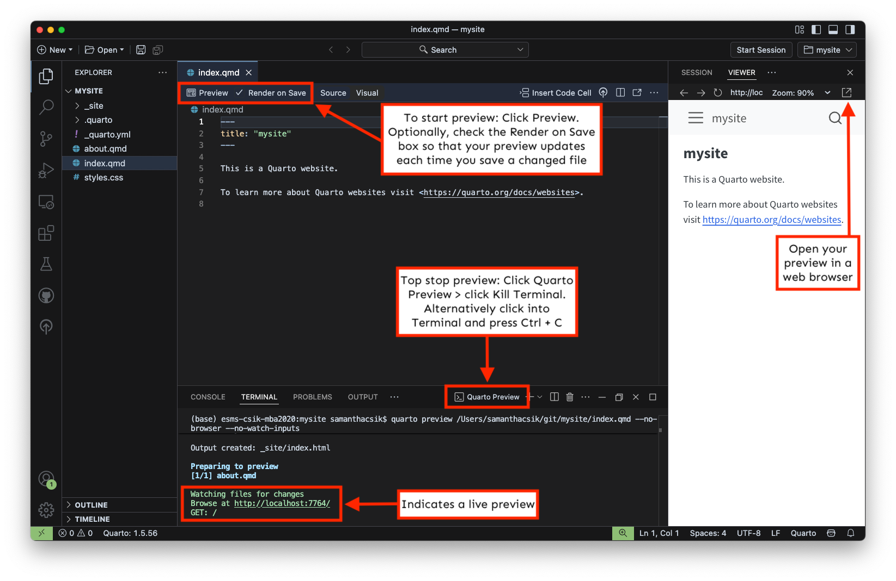
Terminal
quarto previewCtrl + C in your Terminal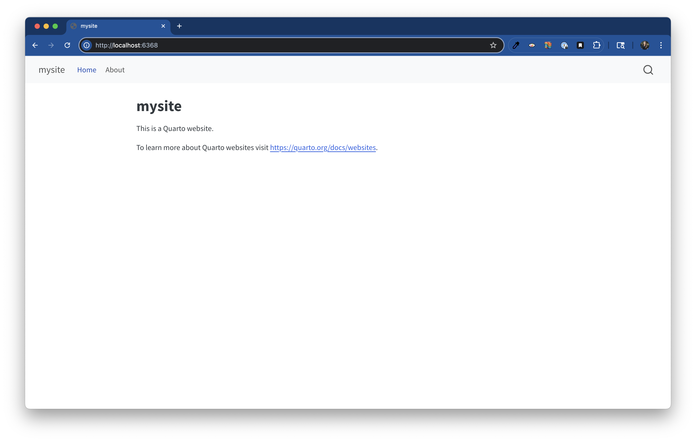
quarto preview makes it easy to quickly view iterative changes
Running quarto preview launches a preview of your website in a browser window. So long as you leave the preview running, it will update each time you make and save changes to website files (which makes iterating on your work really easy!).
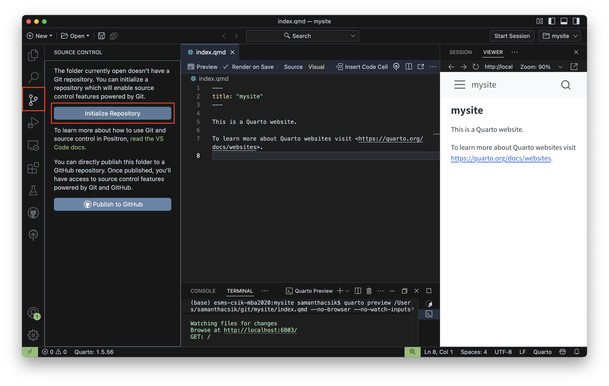
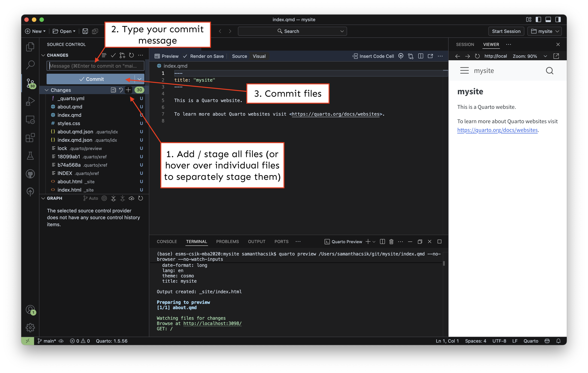
{usethis} is an R package, we’ll need to first start an R interpreter. Click on the Start Session button, then choose the version of R you’d like to use (I only have one installed here):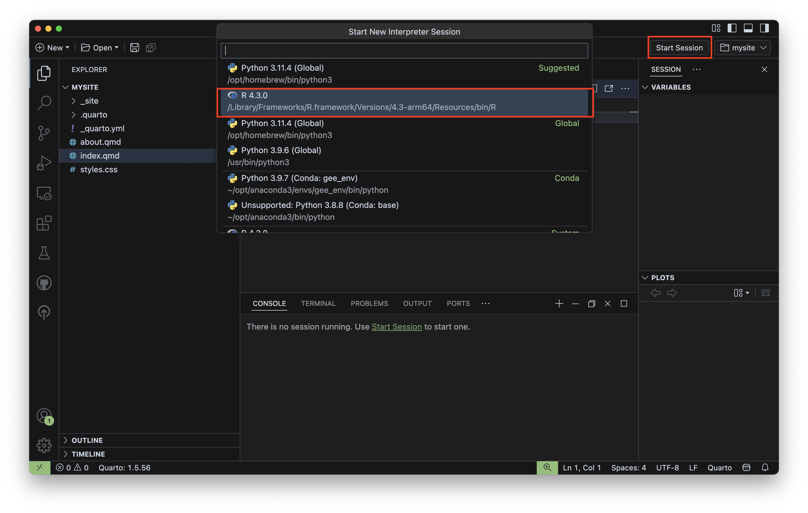
{usethis} package (if you don’t already have it) by running the following in your console:Console
install.packages("usethis"){usethis} relies on recognizing a project root (i.e. the top-level directory)
This project root is often denoted by an .Rproj file, which is automatically added when you spin up a new project in RStudio (but it can also be the presence of a git repository (.git/), a .here file, a package DESCRIPTION, among others). In order to use {usethis} functions for executing Git commands (like intializing a Git repository), we need a recognizable project root.
However, {usethis} currently does not recognize the root of a Quarto project (though shout out to Jenny Bryan, who flagged this for update in this issue). This means we first need to establish our project root before moving forward (see step iii, below).
Console
usethis::proj_set(".", force = TRUE)Console
usethis::use_git()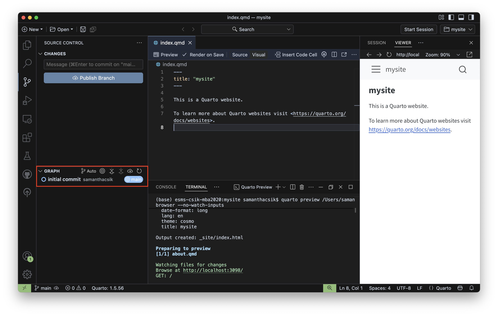
Ensure you’re in your project’s root directory (e.g. mysite/) by typing pwd (print working directory) in Positron’s Terminal
Initialize this folder as a git repository using the command:
Command line / Terminal
git initCommand line / Terminal
git statusCommand line / Terminal
git add . # stage all files
git status # check to see that files were staged
git commit -m "initial commit" # commit them with a commit message
git status # check to see that files were committedWhen we initialize our R project, mysite/ (or yourGitHubUsername.github.io/), as a git repository using git init (or a wrapper function, such as usethis::use_git()), a hidden .git/ folder is created within that project folder. This hidden .git/ folder is the git repository. As you use git commands (or RStudio’s GUI buttons) to capture versions or “snapshots” of your work, those versions (and their associated metadata) get stored within the .git/ folder. This allows you to access and / or recover any previous versions of your work. If you delete .git/, you delete your project’s history. Here is an example website repository, represented visually:
Click on the Source Control menu (left side menu option that looks like a branch). You should see the branch name next to your most recent commit.
Open Positron’s Terminal (next to the Console) and run either git branch (this prints all local branches and highlights the one that you’re currently on) or git status (the first printed line should say On branch <branch name>)
master, update the name to main. (If your branch is named main, you’re good to go! You can skip this step.) Select the option below that fits your workflow:main by running the following in your Terminal:Terminal
git config --global init.defaultBranch mainIn addition to updating this branch name to main, this command also sets the default branch name to main for any new repositories you create moving forward (it does not rename branches in existing projects).
git status in the Terminal. The first printed line should now read, On branch main (you should also see your updated branch name next to your most recent commit in the Source Control menu).This option assumes that you’ve already converted your Quarto Project to an R Project (refer back to step 3, where we initialized our project as a git repository, if necessary)
Console
usethis::git_default_branch_rename(from = "master", to = "main")Confirm that your branch name was updated by running git status in your Terminal – the first printed line should now read, On branch main (you should also see your updated branch name next to your most recent commit in the Source Control menu).
The above function only updates your default branch name for this respository. You’ll also want to update your git config file so that the default branch name of any future local git repository is automatically named main. To do so, run:
Console
usethis::use_git_config(init.defaultBranch = "main")This includes things like setting your user.name and user.email, which are used to identify the author of commits (recall that we did this when we first configured git as part of the MEDS Installation Guide). It’s also a place for us to permenently set the name of our default branch for all future git repositories. You can view the contents of your entire git config file by running the following command in your Terminal:
Terminal
git config --listThere is a push across platforms and software to update this historical default branch name from master to main. GitHub has already done so – creating a remote repository first results in a default branch named main. Depending on your version of Git and / or your configuration settings, however, you may need to update the name manually when creating a local git repository first (as we’re doing here).
Open the Source Control menu (left side menu option that looks like a branch)
Click either the Publish Branch button (under Changes), or the cloud upload button (under Graph) (you may be first prompted to log into GitHub), then select Publish to GitHub public repository from the Command Palette. This will open up your new remote repository on GitHub in a web browser – it should already have the same name as your local git repo
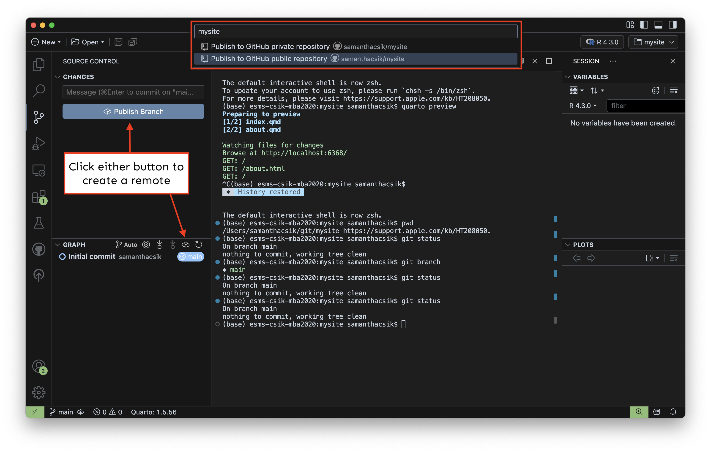
This option assumes that you’ve already converted your Quarto Project to an R Project (refer back to step 3, where we initialized our project as a git repository, if necessary)
Console
usethis::use_github()
There are multiple ways to do this, but we’ll cover the workflow that makes most intuitive sense to me.
username.github.io).README.md, license, or .gitignore file!
Doing so now can lead to merge conflicts. We can add them after our local and remote repositories have been connected.
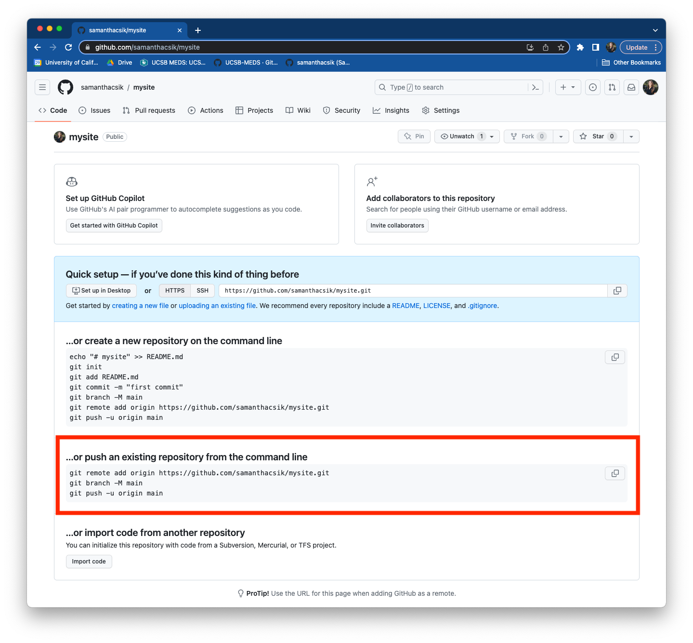
Command Line
git remote add origin https://github.com/YourGitHubUsername/yourRepoName.git
git branch -M main
git push -u origin mainIt does three things:
main (if you didn’t complete step 7, this will take care of it for you!)main branch to the remote GitHub repositoryYou should see something similar to this print out, if successful!
Command line / Terminal
(base) Samanthas-Air:mysite samanthacsik$ git remote add origin https://github.com/samanthacsik/mysite.git
(base) Samanthas-Air:mysite samanthacsik$ git branch -M main
(base) Samanthas-Air:mysite samanthacsik$ git push -u origin main
Enumerating objects: 42, done.
Counting objects: 100% (42/42), done.
Delta compression using up to 8 threads
Compressing objects: 100% (35/35), done.
Writing objects: 100% (42/42), 311.78 KiB | 15.59 MiB/s, done.
Total 42 (delta 2), reused 0 (delta 0), pack-reused 0
remote: Resolving deltas: 100% (2/2), done.
To https://github.com/samanthacsik/mysite.git
* [new branch] main -> main
Branch 'main' set up to track remote branch 'main' from 'origin'.
(base) Samanthas-Air:mysite samanthacsik$ 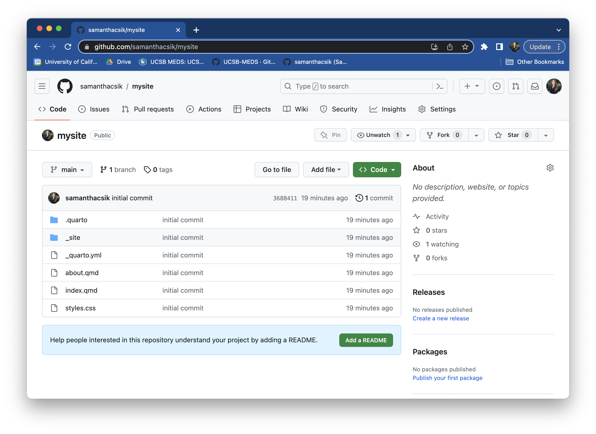
.gitignore, LICENSE, README.md files, which we chose not to initialize our remote repository with. The touch command can be used to create any file type that we want (just make sure you’re in the desired location – typically, you want to create these in your project’s root directory). For example:Command line / Terminal
touch .gitignoreGit is a version control software designed to manage the versioning and tracking of source code files and project history. It operates locally on your computer, allowing you to create repositories and track changes. It works directly with files on your computer, and is primarily used through a command line interface (e.g. Terminal, Git Bash). Some GUIs (Graphical User Interfaces), like RStudio, provide user-friendly buttons to execute git commands as well.
GitHub is a cloud-based hosting service that allows you to manage Git repositories – as Jenny Bryan describes in her book Happy Git and GitHub for the useR, hosting services like GitHub “provide a home for your Git-based projects on the internet.” GitHub provides us with the tools for storing, managing, and collaborating on git repositories. It also offers additional features on top of Git, like issue tracking, project management tools, code review, pull requests, and more.
The illustration below depicts how we use Git and GitHub together to version control our work locally (e.g. on our computer(s)), and send versions to and receive updates from a remote (i.e. GitHub) repository.
Illustration by Allison Horst
Open up your command line interface (often Terminal on Macs or Git Bash on Windows)
Navigate to the location on your computer where you’d like your project to live. Determine where you are in your file system using pwd (print working directory). Use cd (change directory) to navigate your file system to wherever you’d like your project to live.
Create the scaffolding (i.e. folder structure & necessary files) for your website by running the following in the command line (substitute mysite with whatever name you want to give your repo):
Command line / Terminal
quarto create-project mysite --type website yourGitHubUsername.github.io if you plan to deploy using GitHub pages
Because we’ll be using GitHub pages to publish / host our websites, it’s recommended that you name your project yourGitHubUsername.github.io (you’re allowed one user website with the github.io suffix) – for example, the project / GitHub repository, which contains the code for my personal website, is named samanthacsik.github.io. Otherwise, name it something reasonable (this will become the slug for your site if publishing with GitHub pages, so choose carefully). I’m calling my project mysite just for tutorial purposes only – you should definitely give yours a more practical / creative name.
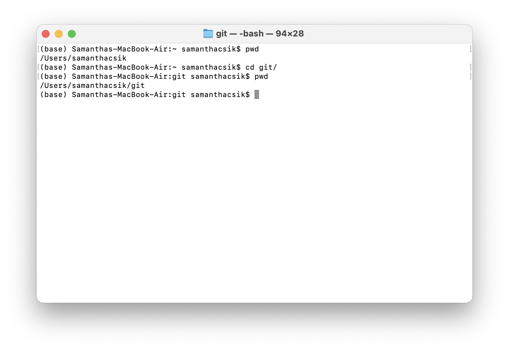
pwd to see your current working directory. Use cd to change directories.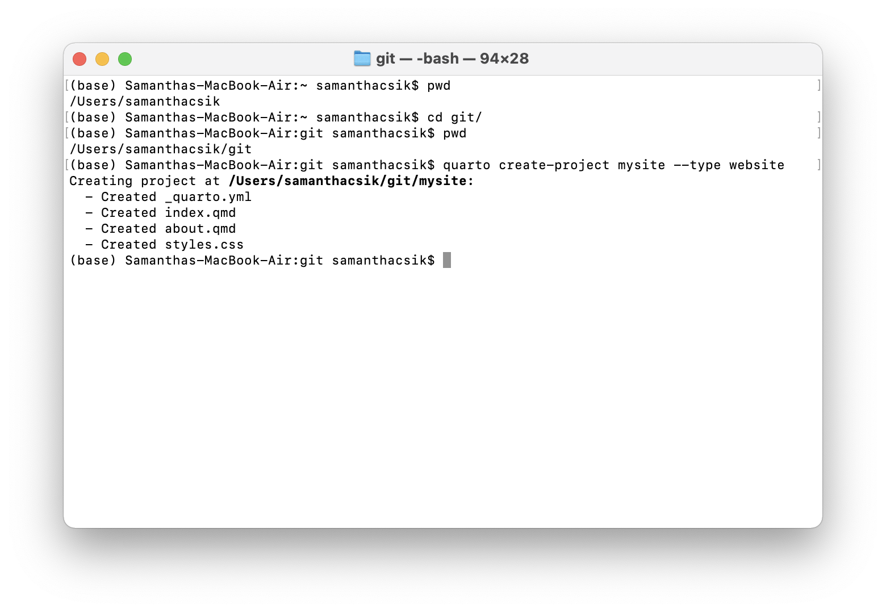
quarto create-project your_project_name --type website commands.If you cd into your new mysite directory, and use the ls command to list out all the contents of that directory, you should see a series of files (_quarto.yml, about.qmd, index.qmd, styles.css) that provide the scaffolding for your website. For example:
Command line / Terminal
# print current working directory
(base) Samanthas-MacBook-Air:git samanthacsik$ pwd
/Users/samanthacsik/git
# move into `mysite` directory
(base) Samanthas-MacBook-Air:git samanthacsik$ cd mysite/
(base) Samanthas-MacBook-Air:mysite samanthacsik$
# list out all files in the `mysite` directory
(base) Samanthas-MacBook-Air:mysite samanthacsik$ ls
_quarto.yml _site about.qmd index.qmd styles.cssAlternatively, you can use Finder (Mac) or Windows Explorer (Windows) to view your new directory and files.
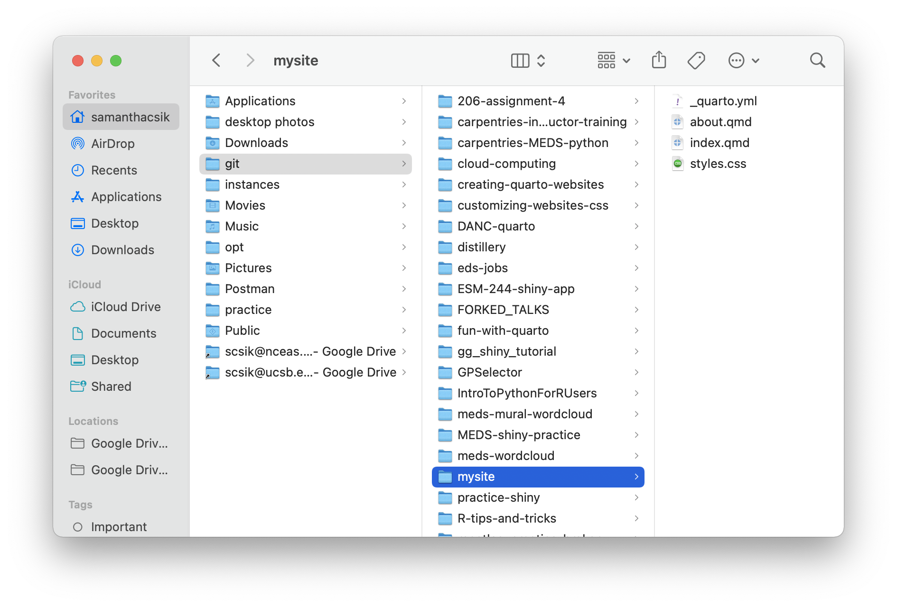
When you create a new Quarto website, a handful of files are generated by default:
index.qmd renders your website’s landing page. Whatever you add to this file will be the first content visitors see when they visit your site. Update the content of index.qmd (or any other website page) using markdown and / or HTML (you can mix and match both on the same page), add and execute code chunks and embed outputs, etc. Importantly, do not change the name of index.qmd – this is the default / expected name given to website landing / home pages. If you change the name of this file, you risk breaking your (eventual) deployment.
about.qmd is a regular ’ole website page. You’re able to change both the name of this file (e.g. change about.qmd to my-new-name.qmd) and / or the title of the file by updating its YAML – by default, the YAML only includes a title:
about.qmd
---
title: "About"
---.qmd file and is denoted by a pair of “gates”, ---._quarto.yml is your website configuration file. Any document rendered within your project directory will automatically inherit the metadata defined in this project-level configuration file (though you can control metadata on a page-by-page basis by making edits to an individual page’s YAML, which will override any options specified in _quarto.yml). Importantly, this is where you define your website’s structure (e.g. your navbar, sidebar, footer, etc.). By default, your file should look similar to this:_quarto.yml
project:
type: website
website:
title: "mysite"
navbar:
left:
- href: index.qmd
text: Home
- about.qmd
format:
html:
theme: cosmo
css: styles.css
toc: truestyles.css is a stylesheet, where you can write CSS rules to alter the appearance of your website. We’ll actually create and use a different type of stylesheet (called a “sassy css file”, .scss) in just a little bit.The following will appear after we preview our website and initialize our project as a git repository
The _site/ directory is where all of your rendered HTML (and other important) files live. When you render or preview your site (we’ll do this in the next step!), Quarto takes all of your .qmd files and converts them to .html files, and saves them to this folder (which is important because web browsers don’t know how to read .qmd files, but do know how to read .html files). We’re actually going to change the name of this folder once we configure our website for deployment, but _site is the default name that Quarto uses (we can leave as-is, for now). You don’t want to physically edit or move any files inside this directory (if you want to make a change to your website, update the .qmd or _quarto.yml file, then re-render).
.gitignore is a place where we can specify any files that we don’t want Git to track (i.e. that we want Git to ignore). This is not a “Quarto thing,” but rather a valuable file that lives inside git directories. One common use is to add any large data files that you don’t want to accidentally push to GitHub (GitHub isn’t designed to handle LARGE files).
mysite/)):Command line / Terminal
quarto previewYour site preview should open up in your browser. Quit your preview by pressing Ctrl + C.
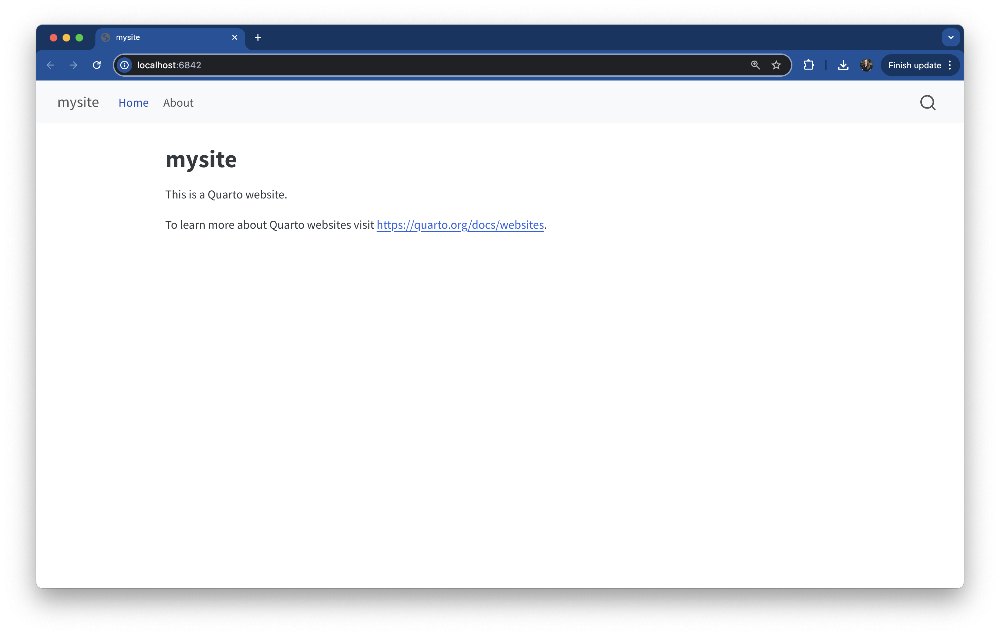
quarto preview makes it easy to quickly view iterative changes
Running quarto preview launches a preview of your website in a browser window. So long as you leave the preview running, it will update each time you make and save changes to website files (which makes iterating on your work really easy!).
You can also preview your website from different locations using file paths. You’ll need to supply the path to your website directory when previewing from a different location. For example, if my Quarto website directory is at Users/samanthacsik/git/mysite, but I am one directory above in Users/samanthacsik/git, I can run quarto preview mysite. Alternatively I could provide the full path quarto preview User/samanthacsik/git/mysite or relative path quarto preview ~/git/mysite, no matter which directory I’m currently in.
cd into your website folder. Then, initialize this folder as a git repository using the git init command in the Terminal window:Command line / Terminal
git initWhen we initialize our R project, mysite/ (or yourGitHubUsername.github.io/), as a git repository using git init (or a wrapper function, such as usethis::use_git()), a hidden .git/ folder is created within that project folder. This hidden .git/ folder is the git repository. As you use git commands (or RStudio’s GUI buttons) to capture versions or “snapshots” of your work, those versions (and their associated metadata) get stored within the .git/ folder. This allows you to access and / or recover any previous versions of your work. If you delete .git/, you delete your project’s history. Here is an example website repository, represented visually:
git status in the command line to identify the name of your default branch (this should be the only branch you have at the moment). Running git status will return something that looks like this, where the first line tells you which branch you’re currently on:Command line / Terminal
(base) Samanthas-MacBook-Air:mysite samanthacsik$ git status
On branch master
No commits yet
Untracked files:
(use "git add <file>..." to include in what will be committed)
.quarto/
_quarto.yml
_site/
about.qmd
index.qmd
styles.css
nothing added to commit but untracked files present (use "git add" to track)git status provides lots of helpful information about the current state of your working directory and staging area
I use this command often when working on the command line to double check that I’m actually where I think I am, and to see tracked files and untracked or changed files. It’s a good habit to run git status after switching branches or before / after adding files to commit.
master, update the name to main. If your default branch (you should only have one branch so far, which is the default branch) is already named main, you can head straight to step 8. Otherwise, choose your workflow below based on your Git version (check your version by running git --version in the command line):You can update the default branch to main by running the following line in the command line:
Command line / Terminal
git config --global init.defaultBranch mainThis sets the default branch name to main for any new repositories you create moving forward (it does not rename branches in existing projects).
You can double check that this worked by typing out the git status command again. The first printed line should now read, On branch main.
Rename the default branch as main by running the following line in the command line:
Command line / Terminal
git branch -m master mainThe -m attribute is used to rename the branch without affecting the branch’s history.
This sets the default branch name to main ONLY for this repository (so you’ll need to do this with any new local git repositories that you create.
You can double check that this worked by typing out the git status command again. The first printed line should now read, On branch main.
This includes things like setting your user.name and user.email, which are used to identify the author of commits (recall that we did this when we first configured git as part of the MEDS Installation Guide). It’s also a place for us to permenently set the name of our default branch for all future git repositories. You can view the contents of your entire git config file by running the following command in your Terminal:
Terminal
git config --listThere is a push across platforms and software to update this historical default branch name from master to main. GitHub has already done so – creating a remote repository first results in a default branch named main. Depending on your version of Git and / or your configuration settings, however, you may need to update the name manually when creating a local git repository first (as we’re doing here).
Command line / Terminal
# this adds all untracked or changed files at once
git add .
# alternatively, you can add files individually
git add <file_name>git status to check in on your file status
Use the git status command again to see if your files have been successfully added before committing them – any untracked or changed files that were once printed in red should now appear in green.
…and commit them (analogous to pressing the “Commit” button in RStudio and typing your commit message into the dialog box that appears):
Command line / Terminal
git commit -m "initial commit"yourGitHubUsername.github.io).README.md, license, or .gitignore file!
Doing so now can lead to merge conflicts. We can add them after our local and remote repositories have been connected.
Command Line
git remote add origin https://github.com/YourGitHubUsername/yourRepoName.git
git branch -M main
git push -u origin mainIt does three things:
main (if you didn’t complete step 7, this will take care of it for you!)main branch to the remote GitHub repositoryYou should see something similar to this print out, if successful!
Command line / Terminal
(base) Samanthas-Air:mysite samanthacsik$ git remote add origin https://github.com/samanthacsik/mysite.git
(base) Samanthas-Air:mysite samanthacsik$ git branch -M main
(base) Samanthas-Air:mysite samanthacsik$ git push -u origin main
Enumerating objects: 42, done.
Counting objects: 100% (42/42), done.
Delta compression using up to 8 threads
Compressing objects: 100% (35/35), done.
Writing objects: 100% (42/42), 311.78 KiB | 15.59 MiB/s, done.
Total 42 (delta 2), reused 0 (delta 0), pack-reused 0
remote: Resolving deltas: 100% (2/2), done.
To https://github.com/samanthacsik/mysite.git
* [new branch] main -> main
Branch 'main' set up to track remote branch 'main' from 'origin'.
(base) Samanthas-Air:mysite samanthacsik$ .gitignore, LICENSE, README.md files, which we chose not to initialize our remote repository with. The touch command can be used to create any file type that we want (just make sure you’re in the desired location – typically, you want to create these in your project’s root directory). For example:Command line / Terminal
touch .gitignoreGit is a version control software designed to manage the versioning and tracking of source code files and project history. It operates locally on your computer, allowing you to create repositories and track changes. It works directly with files on your computer, and is primarily used through a command line interface (e.g. Terminal, Git Bash). Some GUIs (Graphical User Interfaces), like RStudio, provide user-friendly buttons to execute git commands as well.
GitHub is a cloud-based hosting service that allows you to manage Git repositories – as Jenny Bryan describes in her book Happy Git and GitHub for the useR, hosting services like GitHub “provide a home for your Git-based projects on the internet.” GitHub provides us with the tools for storing, managing, and collaborating on git repositories. It also offers additional features on top of Git, like issue tracking, project management tools, code review, pull requests, and more.
The illustration below depicts how we use Git and GitHub together to version control our work locally (e.g. on our computer(s)), and send versions to and receive updates from a remote (i.e. GitHub) repository.
Illustration by Allison Horst
There are a lots of options to publish your website. We’ll use the GitHub Pages option, which allows you to publish a website from any GitHub repository (for free!). To do so, there are a few configuration steps:
.nojekyll in your repository’s root directory (e.g. mysite/), which is required to disable some processing of HTML files that GitHub does by default. There are a few ways you can do this:From RStudio’s Files pane, click New Blank File > Text File, then type .nojekyll > click OK (you can use the Text File option to create any file type)
From Positron’s Explorer menu, click on the New File… button,
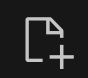
, (if you don’t see it, hover your mouse over your repository directory name). Type.nojekyll then press Enter/Return to add it.
NOTE: You may use the Terminal in RStudio, Positron, or a separate command line interface (just make sure you’re in the correct directory)
From the Terminal, type the bash command,
Command line / Terminal
touch .nojekyllThe touch command can be used to create a new, empty file.
.nojekyll files may (or may not, depending on your IDE) visibly appear in your directory
.nojekyll is a hidden file which may not visibly appear in your directory (e.g. if using RStudio). Regardless, you should see it show up as a file to track with git (either under the Git tab in RStudio, the Source Control menu in Positron, or when you run git status in the command line). You can also view hidden files in Finder (Mac) using the keyboard shortcut Cmd + Shift + ., or follow these instructions for Windows 10 and 11.
output-dir in your _quarto.yml file to docs (it’s easiest to open and edit this using RStudio or Positron):_quarto.yml
project:
type: website
output-dir: docs
# ~ additional metadata excluded for brevity ~output-dir (here, that’s the docs/ folder)
The output-dir is the directory (i.e. folder) where your rendered .html (and other important) files will automatically be saved to when you “Build” your website (see the next step!) – that is, when you convert all your .qmd files to the .html files that your web browser can interpret / display.
_site/ if it exists and if you’re publishing with GitHub Pages
If you previewed or built your site before setting output-dir to docs in _quarto.yml, you’ll notice a _site/ directory inside your repository – this is the default output directory name. Because GitHub Pages will expect a docs/ folder to deploy from, you can delete _site/ altogether (and push your deletion, if you’ve already committed / pushed _site/ to GitHub). A couple options for deleting files / directories:
From the Files pane, check the box next to _site > click the Delete button
From the Explorer menu, right click on _site > click Delete
Type the command git rm -r _site (the -r flag is used to “recursively remove” the folder and all it’s contents, including any subfolders and files within them)
Click on the Build tab (top left pane in RStudio, if you have the default layout), then Render Website. You should see your minimal, albeit functional, soon-to-be website appear in the Viewer pane. You can click on the  button to open your file in your web browser. Note: your website is currently being hosted by your local machine, not at a searchable URL. We’ll get there soon though!
button to open your file in your web browser. Note: your website is currently being hosted by your local machine, not at a searchable URL. We’ll get there soon though!
Clicking Render Website in the Build tab (or running quarto render in the Terminal) is a necessary pre-deployment (and redeployment) step – it converts all .qmd files to .html and ensures that all website components are stitched together correctly. If you do not render your website before pushing your files, your changes will not deploy.
Note: Previewing your website is different than rendering your website. Previewing alone does not formally prepare all of your website files for deployment.
NOTE: I would love some community input on this – still trying to understand if I’m interpeting this documentation correctly
Positron’s Preview button (which becomes available when you open any of your website .qmd files, e.g. index.qmd) both spins up a preview in the Viewer pane and fully renders your website so that it’s ready for distribution (e.g. pushing to GitHub to deploy using GitHub pages).
If you update your website, preview it, push the changes to GitHub, and still don’t see those updates reflected online, try running quarto render in the Terminal before pushing again. This ensures that your website is properly rebuilt ahead of redeployment.
Run quarto render in the Terminal – you may use the Terminal in RStudio, Positron, or a separate command line interface (just make sure you’re in the correct directory).
NOTE: If you’re using an RStudio Terminal, running quarto render will open up your fully rendered website in the Viewer pane (similar to what you see when you preview your site). If you’re using a Positron Terminal or a seperate command line interface, running quarto render will not provide a visible preview.
Ctrl/Cmd + Enter/Return (or by pressing the Commit button)git add . in the Terminal (or stage files individually by running git add file-name)git commit -m "my commit message" in the Terminalgit push in the Terminalmain and that the selected folder is set to /docs. Click Save. Once deployed (this may take a few minutes), your website’s URL will appear inside a box at the top of the page (you may have to try refreshing a few times).

See deployment status, time of each deployment, and how long it took to deploy each run. You can also find failed deployments here (yes, it does happen on occasion) and take action on fixing them.